How to
Easily Manage Device Fragmentation Directly from NetBeans IDE
with the Celsius Automated Porting Suite
Deploying a new technology that enables mobile application development
is never easy and providing developers with a familiar environment they
can master is critical. When Sun Microsystems delivered the NetBeans
IDE (Integrated Development Environment), many mobile application
developers adopted this solution due to its usability and ease of
learning.
Mobile Distillery quickly recognized the need to integrate its
solution, Celsius, with the IDE. Celsius enables automatic porting of
mobile applications from a single code source bringing this powerful
development and debugging solution in a familiar environment to the
developer community. Now Celsius, in partnership between Sun
Microsystems and Mobile Distillery, is fully integrated into the
NetBeans IDE to help developers in every step of their work by offering
a plug-in to create ports of mobile application projects and allow them
access to the broad range of tools offered by Mobile Distillery.
One example of this solution is a UI (User Interface) that combines
functional engineering and personalized appearance linked by a
Bluetooth connection. This is no easy task when using only what is
available to Java ME developers. One basic approach is to link all of
the classes to a form and the other components used and refer to JSR-82
documentation to establish the requirements for Bluetooth connections.
However it is clearly impossible to personalize
the components placement (combo box, radio buttons, etc) or to
implement customized branding of the UI. The other challenge developers
face is managing JSR-82 implementations that do not work properly
on a number of handsets.
The aim of this article is to highlight how simple and reliable
programming an application becomes when using Celsius, and how the
integration with NetBeans makes things even easier.
NetBeans and Celsius: Complete Integration
Let’s see how integration is done in NetBeans IDE.
After Installation of the Plugin
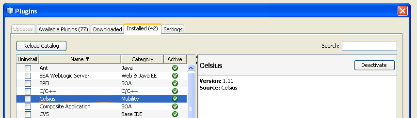
Creating the Project
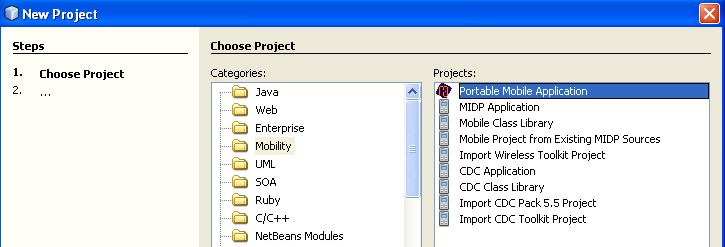
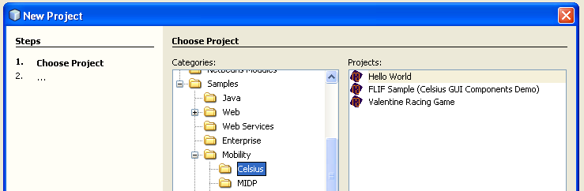
Once the project has been created, the developer is provided with a
personalized environment. The project is added to the workspace and
access to the main classes of a mobile applications (Midlet and Canvas)
can easily be found. Code can be added where appropriate to take full
advantage of features provided by NetBeans in accessing JavaDoc
libraries. The developer can also use the auto-completion feature to
get an overview of the different classes offered by Celsius. Thus we
discover how this solution manages different APIs in the form of simple
modules.
Workspace and CelsiusCanvas
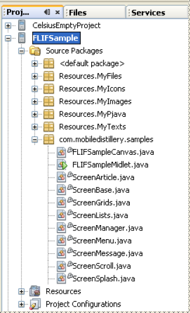
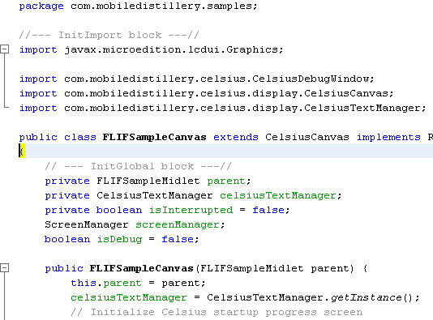
Graphical User Interface and BlueTooth: How to
Easily Set Up Elements
Applications providing UI components for editing data often use system
methods (Form, Editbox, Combobox, etc) to quickly display components.
Unfortunately this does not address several problematic issues such as
the list management or navigation between different screens.
Because the system components do not offer customization either in
terms of rendering or placement, it becomes difficult to provide a
compelling and user friendly experience. Furthermore, whatever the type
of application, the developer is faced with similar and even identical
limitations, without having a chance to make modifications.
Developers and project managers are therefore forced to adapt the
application specification (eg: storyboards or scenarios) to the
system layer's capability, and they cannot create the designs they
want,
but instead must deal with system limitations. Additionally, the
requirement of obtaining homogeneous graphical rendering, regardless of
the device properties (screen size, MIPD type, colors, etc.), makes it
difficult to handle due to the varied manufacturer implementations.
Once
that is achieved, the Bluetooth issue still needs to be resolved to
establish connectivity and offer the latest mobile application
development capabilities.
The following section aims to illustrate what it is necessary to
overcome these limitations.
Using Celsius in NetBeans: Simplicity and Ease of Use
The UI developer is provided a user-friendly template with a simplified
architecture to get started and has advanced functionality available
that is made easily understandable by the JavaDoc integration in
NetBeans. All of the tools used for developing an application (e.g. the
Resource Manager) can be directly accessed from within the standard
NetBeans interface and the developer including the project source code
and the Visual Editor linked to the project.
JavaDoc

Toolbar
Once these concepts are understood, the developer can launch the
application and observe the interactions as well as the start up
process and easily modify the proposed source code to add new
functionalities such as a Bluetooth connection.
Below is the result of an application launch generated by the template.
After launch we can alter the main menu to add new functionality and
enable Bluetooth connection management.
Main Menu and Capture Screen
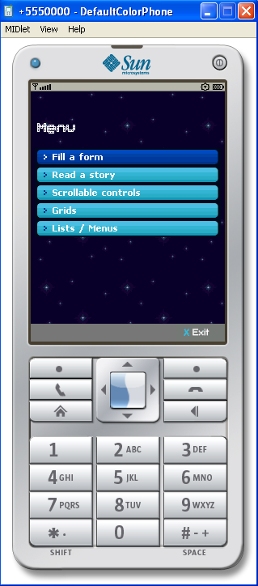
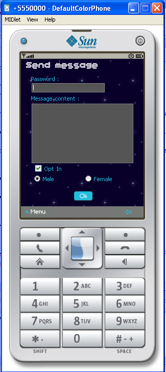
These screens can quickly be personalized using a feature directly
accessible from the NetBeans toolbar. The launch of the Resource
Manager allows the developer to access and modify resources such as
images, texts, and sounds, apply the changes and watch the results
obtained -- all during the development phase. This allows any necessary
changes to be made before the application is released.
The Resources Manager
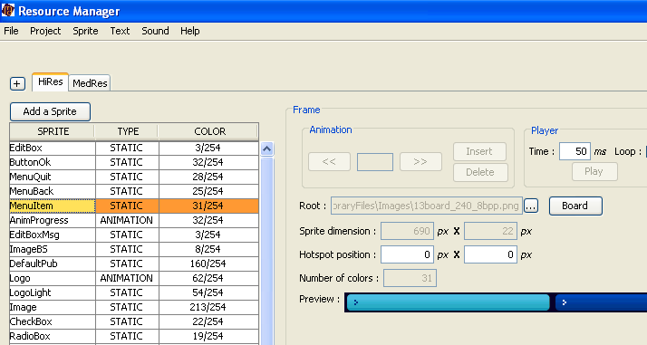
Adding Functionality: Using Templates
The application template architecture that manages the UI is very easy
to access and makes adding new functionality very simple. We will add a
new option for managing Bluetooth connections in the main menu of the
generated application.
Main Menu
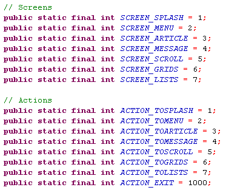
Modified Main Menu
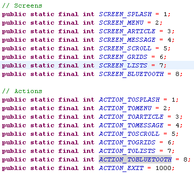
Adding New Functionality
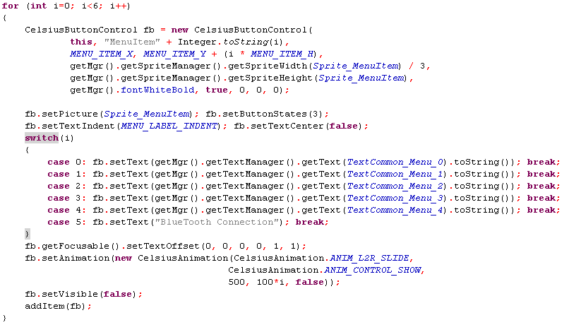
Let’s look at the results now:
The New Main Menu
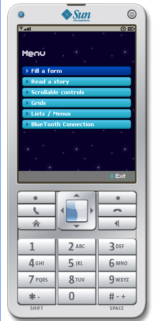
Notice that with just a few added lines it's simple to add new screens.
Using the Resource Manager makes modifying the look and feel of
applications easy and we can test as many games or graphical sets as
often as needed. Once this new functionality for managing Bluetooth
is integrated in the interface it uses Celsius advanced methods.
By making some simplified classes available to the developer, managing
Bluetooth becomes as simple as it can be.
An Example of Simple Device Searching Using Celsius:
Simple device searching source code:
package MyMidlet;
import
com.mobiledistillery.celsius.wireless.bluetooth.*;
import javax.bluetooth.UUID;
import javax.bluetooth.ServiceRecord;
import javax.bluetooth.RemoteDevice;
public class BtDemoDevices extends BtDemoBase implements
CelsiusBluetoothListener
{
// will search for all devices, not mobiles only
public static
int BLUETOOTH_CLASS = 0;
// no name matching, all devices will be retrieved
public static
String BLUETOOTH_MATCHNAME = "";
// if we want to first search a "known" device, to
get rid of inquiry time
// (the inquiry will be performed only if the device
is not found)
public static
String BLUETOOTH_START = "";
public
CelsiusBluetoothCommunication btComm;
public
BtDemoDevices(BluetoothScreenReport
screenReport)
{
super(screenReport);
btComm = new
CelsiusBluetoothCommunication(true);
// Does this mobile supports JSR
82 ?
if (btComm.getStatus() ==
CelsiusBluetoothCommunication.STATUS_INIT_ERROR)
{
report("Error
: JSR 82 is certainly not correctly supported !");
return;
}
// this class will be the listener
btComm.setSearchListener(this);
// will retrieve cached &
preknown devices
btComm.setRetrieveDevices(true,
true);
// discover timeout to 5 minutes,
service search timer to 1 minute
btComm.setTimeout(300000, 60000);
// launch search : find(boolean
searchDevices, boolean searchServices, int device_class, String
matchName, String startAddr, UUID uuid, boolean firstOnly)
if (!btComm.find(true, false,
BLUETOOTH_CLASS, BLUETOOTH_MATCHNAME, BLUETOOTH_START, null, false))
report("Error : " + btComm.getErrorMessage());
else
report("Processing ...");
}
public void
close()
{
btComm.close();
btComm = null;
}
public void
notifySearchEvent(int status)
{
switch(status)
{
case
CelsiusBluetoothCommunication.STATUS_SEARCH_ERROR:
report("Error : " + btComm.getErrorMessage());
break;
case
CelsiusBluetoothCommunication.STATUS_SEARCH_COMPLETE:
report("Inquiry complete (" +
Integer.toString(btComm.getFinder().getInquiryDuration()) + " ms)");
report("Names retrieved (" +
Integer.toString(btComm.getFinder().getAskNamesDuration()) + " ms)");
// Display found devices information
for (int i=0;
i<btComm.getFinder().getDevices().size(); i++)
{
// Report found devices
report((String)(btComm.getFinder().getDevicesAddresses().elementAt(i))
+
"
- " +
(String)(btComm.getFinder().getDevicesNames().elementAt(i)));
}
break;
case
CelsiusBluetoothCommunication.STATUS_INIT_ERROR:
report("Error : Bluetooth is certainly turned off");
break;
}
}
public void
deviceFound(RemoteDevice btDevice)
{
// to debug window only ...
System.out.println("[Client]
deviceFound listener : " +
btDevice.getBluetoothAddress());
}
public void
serviceFound(RemoteDevice btDevice,
ServiceRecord[] servRecord)
{
// to debug window only ...
System.out.println("[Client]
serviceFound listener : " +
btDevice.getBluetoothAddress());
}
}
Conclusion:
Promoting a middleware technology such as Celsius through an IDE like
NetBeans is without any doubt a straightforward way of approaching the
mobile developer community by offering them ease of use in both the
environment and the technology. Resource management facilitated by
NetBeans enables this single source code approach. Auto-completion,
Syntax analysis, JavaDocs, and the tools for developing and debugging
translates into considerable help for developers that need to create a
huge number of mobile applications rich in content and functionality.
The learning curve for new Celsius users is thus reduced to a minimum
by utilizing the familiar habits formed during years of practice with a
tool like NetBeans IDE.
Basics of the Celsius mobile
applications automated porting
suite: Based on an exclusive Parametric
Development® architecture and on
more than 7 years of research in mobile technologies and in-depth
device knowledge, Celsius allows developers from one Java ME source
code to automatically port different optimized versions of their
application across more than 1000 Java,
Brew and Windows Mobile devices
worldwide. With Celsius, developers can create complex applications
harnessing mobile technologies like Bluetooth, rich multimedia, (NFC)
Near Field Communications, and the mobile web using integrated code
libraries and its comprehensive development tools. With Celsius,
developers can experience Hassle Free Mobile Development & Porting
Directly from within NetBeans IDE.
More features on
www.mobile-distillery.com
(November
2008)